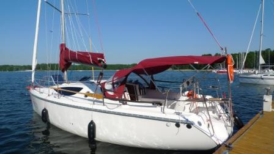

Maxus33
Maxus33

Opis:
Jacht Maxus 33.1 RS powstał na bazie doświadczeń z eksploatacji modelu Maxus 33 – jachtu, który przebojem zdobył rynek. Proponujemy do czarteru komfortowy jacht o doskonałych właściwościach nautycznych wyposażony tak , by pływało się bezpiecznie i swobodnie a pobyt w eleganckim wnętrzu był czystą przyjemnością.
Jacht Maxus 33.1 RS powstał na bazie doświadczeń z eksploatacji modelu Maxus 33 – jachtu, który przebojem zdobył rynek. Proponujemy do czarteru komfortowy jacht o doskonałych właściwościach nautycznych wyposażony tak , by pływało się bezpiecznie i swobodnie a pobyt w eleganckim wnętrzu był czystą przyjemnością.
Zdjęcie Pokładu

Dane techniczne:
Ilość koi 8+2 ( 3 kabiny + mesa)
Długość całkowita 10,45 m
Długość kadłuba 9,95 m
Szerokość kadłuba 3,20 m
Wysokość wnętrza 1,95 m
Powierzchnia żagli 52 m2
Wysokość masztu 12,5 m
Zanurzenie 0,45 / 1,70 m
Ilość koi 8+2 ( 3 kabiny + mesa)
Długość całkowita 10,45 m
Długość kadłuba 9,95 m
Szerokość kadłuba 3,20 m
Wysokość wnętrza 1,95 m
Powierzchnia żagli 52 m2
Wysokość masztu 12,5 m
Zanurzenie 0,45 / 1,70 m
Żagiel

Wypożyczalnia jachtów! © Wszelkie prawa zastrzeżone